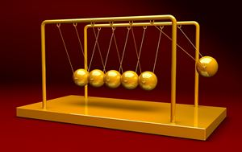
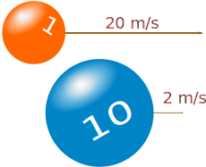
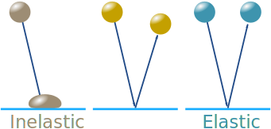

Collisions

A collision is when two objects strike each other over a short space of time.
The momentum of each object can change, but the total momentum does not. We say the momentum is conserved (the total stays the same).
Momentum is Conserved
Conserved: the total stays the same (within a closed system).

Closed System: nothing transfers in or out, and no external force acts on it.
In our Universe:
Note: At an atomic level Mass and Energy can be converted via E=mc2, but nothing gets lost.
Momentum and Kinetic Energy
You might like to read the page on Energy first.
Kinetic Energy (KE) is the energy of motion:
KE = ½ m v2
Where:
- KE is the Kinetic Energy in Joules (J, or kg m2/s2)
- m is mass (in kg)
- v is velocity (in m/s)

Example: A 1kg ball travels at 20 m/s, and a 10 kg ball travels at 2 m/s.
What is the momentum and KE of each?
Momentum
For the 1 kg ball at 20 m/s:
p = m v
p = 1 kg × 20 m/s
p = 20 kg m/s
For the 10 kg ball at 2 m/s:
p = 10 kg × 2 m/s
p = 20 kg m/s
The momentum is the same for each.
Kinetic Energy (KE)
For the 1 kg ball at 20 m/s:
KE = ½ m v2
KE = ½ × 1 kg × (20 m/s)2
KE = 200 kg m2/s2 = 200 J
For the 10 kg ball at 2 m/s:
KE = ½ × 10 kg × (2 m/s)2
KE = 20 kg m2/s2 = 20 J
The KE of the small ball is much higher!
Summary
| 1 kg at 20 m/s | 10 kg at 2 m/s | |
|---|---|---|
| Momentum: | 20 kg m/s | 20 kg m/s |
| KE: | 200 J | 20 J |
So the momentum can be the same while the KE is very different.
Because KE uses velocity squared.
Inelastic vs Elastic Collisions
- Inelastic collisions are mushy (like dough balls)
- Elastic collisions are bouncy (like rubber balls)

In a perfectly Inelastic collision:
- the objects stick together and end up sharing a new velocity
- the objects get deformed by the collision, so
- Kinetic Energy is lost (it gets converted into heat, light and sound)
In a perfectly Elastic collision the objects:
- bounce perfectly off each other
- the total Kinetic Energy stays exactly the same

Collisions are typically in between inelastic and elastic.
Example: drop a tennis ball
It won't bounce back to the same height.
Because some kinetic energy is lost on the bounce (and a little is lost due to air resistance)
So the bounce is slightly inelastic (but mostly elastic).
We can have a scale of 0 (Inelastic) to 1 (Elastic). Try the Momentum Animation to see for yourself.
And in the Gravity Animation, the collisions are either inelastic (two objects smashing into each other) or elastic (the objects swing around each other and head off again).
Example: A railcar weighing 25,000 kg is rolling at 3 m/s east and hooks onto the back of a locomotive weighing 190,000 kg rolling 1 m/s east. What is the combined new velocity?
The collision is inelastic, as the coupling locks the railcar and loco together.
Momentum of Railcar
pcar = 25,000 kg × 3 m/s
pcar = 75,000 kg m/s
Momentum of Loco
ploco = 190,000 kg × 1 m/s
ploco = 190,000 kg m/s
Momentum is conserved, so the combined momentum is the same as when separated:
ptot = mtot v
Which can be rearranged to:
v = ptotmtot
The totals are:
ptot = 75,000 kg m/s + 190,000 kg m/s = 265,000 kg m/s
mtot = 25,000 kg + 190,000 kg = 215,000 kg
Solving:
v = 265,000 kg m/s 215,000 kg
v = 1.2326... m/s
General Formulas
Inelastic is a relatively easy case, but for other cases we can use these general formulas:
new va = elast × mb(vb − va) + mava + mbvb ma + mb
new vb = elast × ma(va − vb) + mava + mbvb ma + mb
Where:
- elast = "Coefficient of Restitution", 0=inelastic, 1=elastic (or any value in between)
- va and ma are the velocity and mass of object a
- vb and mb are the velocity and mass of object b
Example (continued): Instead of getting hooked, they bounce perfectly off each other, what are the new velocities?
The collision is perfectly elastic. We can use an "elast" value of 1:
new va = elast × mb(vb − va) + mava + mbvb ma + mb
new vb = elast × ma(va − vb) + mava + mbvb ma + mb
Put in the values we know:
new va = 1 × 190 × (1 − 3) + 25×3+ 190×1 25 + 190
new vb = 1 × 25 × (3 − 1) + 25×3 + 190×1 25 + 190
Calculate:
new va = −0.5349...
new vb = 1.4651...
The railcar is now moving backwards at about 0.5 m/s, and the loco moving forwards at about 1.5 m/s
Is momentum conserved? The momentum values are now:
pcar = 25,000 kg × 0.5349... m/s = −13,372 kg m/s
ploco = 190,000 kg × 1.4651... m/s = 278,372 kg m/s
ptot = −13,372 kg m/s + 278,372 kg m/s = 265,000 kg m/s
That is the same total value as in the earlier example, so yes, momentum is conserved.